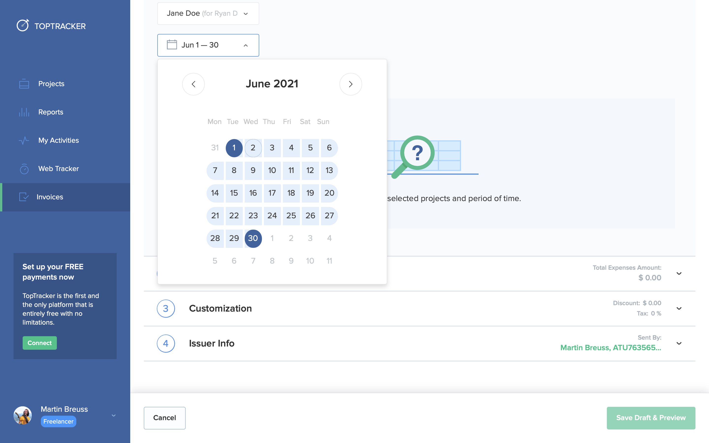
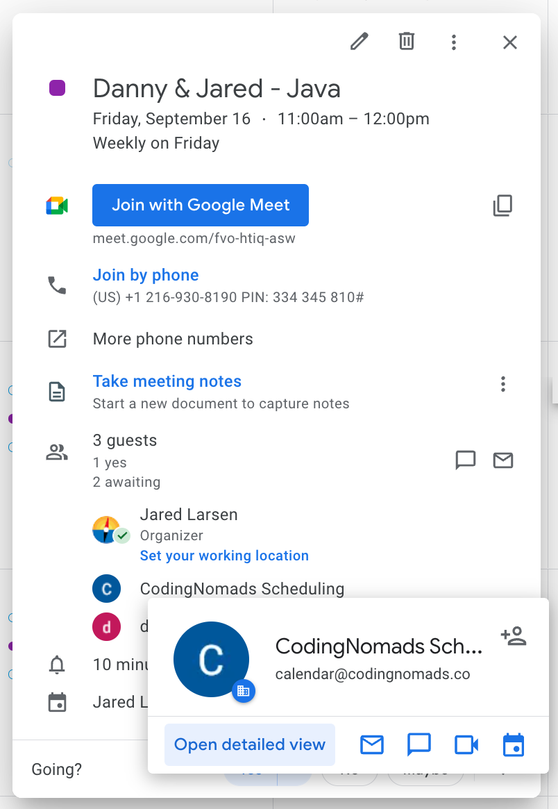

Tools for CodingNomads Mentors¶
This page contains a collection of quick how-to guides for using the necessary tools to be an effective CodingNomads Mentor. It starts with a list of the absolutely essential tools, then describes how to use them in more detail.
Essential Software¶
You'll need these tools in order to be able to mentor a CodingNomads student:
Please make sure to install these programs and request access where necessary. You'll find more detailed descriptions in the dedicated sections.
Time Tracking With TopTracker¶
Please use TopTracker to record your time spent mentoring. https://tracker.toptal.com/
Set Up TopTracker¶
To get started, please follow these steps:
- Sign up for a free account by clicking Get Started as a Freelancer.
- You can click "NO" on any TopTracker setup questions such as "allow screenshots" and "track mouse clicks" or anything weird like that. We do not use those features.
- Notify Jared (or Ryan) to add you to the Onboarding project. You'll receive an invitation from
admin@codingnomads.coto join the project called Onboarding as a Freelancer. - Track the time you spend on onboarding under that project. You can also add manual time entries, for the time you tracked before we managed to invite you to the project.
- Download TopTracker for Desktop, if you prefer to track your time in a dedicated app.
Skip Payoneer Setup: We don't use Payoneer for payment. You can skip that section while setting up your TopTracker account.
Track Mentorship Time¶
Once you've started working with a student, we will set up a Project with your student's name and invite you as a Freelancer. From then on, you'll track the time you spend mentoring this student in their dedicated project. If you are working with multiple students, make sure to record your time for each student in the correct project.
To minimize your effort, when logging time to a student project, you can limit your tracking entries to keywords such as:
- call
- discord
- code review
- etc
Watch the screencast below, which shows you how mentorship time tracking with TopTracker works in practice:
Please follow this workflow to keep track of the time you spend working with your student. Your compensation is based on the recorded time, and the invoices you generate (see next step).
Community Support Project¶
We will also invite you to the Community Support project. This ToppTracker project can be used to answer questions on Discord including the general community support Discord channels (i.e., helping students for which you don’t have a specific project).
You are encouraged to answer any and all questions that are posted by any CodingNomads student on any community channel within CodingNomads’ Discord server. All CodingNomads mentors are permitted to bill for up to two (2) hours per week for answering general student questions and supporting students on any community Discord channel or thread. However, mentors are not permitted to bill for community support on private 1-on-1 channels. Billable community support must be visible to the community. Private 1-on-1 channels are only billable by mentors when working with a student assigned by CodingNomads. If you would like to extend the weekly maximum of two (2) billable hours for general community Discord support, this will need to be previously agreed upon in writing by both you and CodingNomads.
When charging to the community support project, please put both a keyword (from the list above) and a specific description in the TopTracker activity description. For example: “Discord: supporting Tiffany, connecting to databases, general JDBC”.
Wait, but what if I forget turn on my tracker?! Or, even worse, forget to turn it off!?!¶
On its web application, in the "my activities" tab, TopTracker allows you to manually add, edit, or delete time.

Generate and Submit Your Invoices¶
On the first day of each month, please submit an invoice for each of your TopTracker projects for the previous month. Please see the screenshot below for this process, and refer to the Monthly Payment Process for more details about invoicing and payments.
- Click Invoices tab on the left
- Click the green button called Create Invoice in the top right
- Select the project you want to invoice for
- Adjust dates to the first and last day of the previous month
- Click Save Draft and Preview in the bottom right
- Click Send Invoice

You need to submit a separate invoice for each of your students. Please submit all invoices each month in order to get paid.
Scheduling With Google Calendar¶
You'll use Google Calendar for scheduling your student calls. If you don't have a Google account, please sign up for one.
Booking Meetings With Calendly¶
To make life easier for you, you can use Calendly. It's a handy tool that allows you to block out your availability and let students book meeting times with you through a shareable link.
Using their free tier, you can specify the times you are available for meetings, then send your student a link where they can choose a time that works for them.
Calendly can significantly reduce the effort needed to find a time that works for both you and your students. It also integrates with Google Calendar.
Recording Meetings On Google Calendar¶
Every student meeting you have needs to be recorded on our CN Scheduling Calendar at calendar@codingnomads.co. We use this information to keep track of student's meetings and how far along they are in their subscription.
This means you need to:
- include the student and mentor names in the event title - for example "Ryan & Michael"
- invite
calendar@codingnomads.coto every student meeting - update any changes to your student meetings on these shared calendar events
Sometimes, students will need to cancel or move a meeting. Make sure to update the calendar by moving or deleting the meeting.

We can only guarantee payment for meetings that show up on this calendar.
You will also be invited to a calendar invite that represents the student's last week at CodingNomads. If you and your student decide not to meet one week, please update the calendar to add a week to the student's program. For example, if your student requests a week off for christmas (encouraged!), and their last date is January 1st, then update the calendar to show that their last date is now January 8th. If there is any confusion on this topic, please ask Jared or Michael.
Video Sessions and Communication With Discord¶
Discord includes screen-sharing capabilities that can be used for 1-on-1 sessions with students. Google Meet is our recommended alternative in case a student would like to record sessions.
Set Up Discord¶
Before proceeding, please reference the Discord Guide for Members to get an idea of what the Discord experience looks like for subscribing members. The process of joining the server is the same for mentors. The difference is that shortly after joining, roles will be added to your profile that unlock additional channels and abilities on the server.
Server Roles¶
Permissions on the server are moderated using roles. All users who have been verified for access are assigned the Member role. Roles are then "stacked", adding additional permissions to a user. For example:
- Subscribing members (self-study): Member
- Mentored students: Member + Mentored
- Mentors: Member + Mentor
- Mentor/Moderators: Member + Mentor + Moderator

Username color on the server is dictated by their "highest ranking" role. Mentors can easily be identified by the yellow color of their name. Members and Mentored students are represented by slightly different shades of blue.

There are also a collection of "interest roles" that can be applied to your profile by visiting the #interest-management channel. We ask mentors to add all topics they can assist with to their profile.
Channels¶
Please take the time to visit the #introduce-yourself channel and share a short bio message with the community. Let everyone know you are human!
Support channels are broken down into two categories. Your focus as a mentor will be on the channels within the MENTORED SUPPORT category. These channels are only accessible by mentored students, and should be actively monitored by all mentors who have the ability to assist.
For example, if you are a Java mentor, you should right-click the #Java channel (in the MENTORED SUPPORT category) and under Notification Settings -> Select All.
You can also right-click the CodingNomads server icon on the left and click Notification Settings for a dialog with additional options. Here you can quickly set up notification overrides for individual channels or entire categories.

The #general_... support channels (within the community support category) are community supported. This is where you can bill up to 2 hours per week for community support. Admin staff will also often lend a hand to help members here.
The way Discord handles direct messages between two individuals is different than Slack. If you message a user on Discord, you are taken out of the server, in to your private messaging area. This means that server nicknames or server profiles no longer apply. If you are "Sam Smith" on the CodingNomads server, but your username is "smoothcriminal5000", the student is suddenly communicating with smoothcriminal5000. Not a professional look. This goes both ways as well, all of the sudden you have to keep track of your student's real name, and username (which may not be pretty).
To avoid this situation, all mentors will require two dedicated channels for each of their actively mentored students - a Text channel and a Voice channel. The format should always be consistent:
#firstname-lastname
And if you are Sam Smith, these channels will be located within a category titled:
SAM'S STUDENTS or SAM'S MENTEES
This way, all direct communication between you and your students remains inside the CodingNomads server and will not impede on your personal message space. This configuration also comes with the added benefit of allowing custom notification settings for each student.

These channels will be created for you automatically when paired with a student. Please keep your communications with your students to these channels, as well as the community channels within CodingNomads.
Mentor Support and Sessions¶
Your student's dedicated text channel is the primary space for direct support. Encourage students to reach out often, assured that you will respond at your earliest convenience. For times when you will be unavailable for an extended period, point students to the MENTORED SUPPORT category channels for support. That way, other mentors can step in to help.
Voice channels in Discord have built-in screen sharing capabilities. This allows mentors and students to quickly and easily connect for recurring and impromptu support sessions. Once you and your student both join the dedicated voice channel, you can start chatting right away. When the student is ready to share their screen, they can simply click one of two "Share Your Screen" buttons.

From there, they can choose to share a single window (Applications), or the entire screen (Screens).

After clicking Go Live, please set the quality selector to Better Text Readability for the best experience.

Please guide your student through these steps as well.
If you or your student have trouble sharing - black screen, constant loading, etc. it has been found that disabling the following Discord setting can help:
Settings -> Voice & Video -> Open H264 Video Codec provided by Cisco Systems, Inc. -> Disable
As mentioned, we recommend sticking to the audio channels in Discord for 1-on-1 sessions with your students. However, if your student would like to record their 1-on-1 sessions, or either party is having any difficulty with meeting over Discord, we recommend using Google Meet as an alternative.
Progress Check-Ins With The Learning Platform¶
You'll need to keep track of how your student is progressing through the course materials in order to give them actionable feedback and help them keep moving.
Make sure that you have an active account on the CodingNomads learning platform. After you've completed onboarding, you'll get upgraded to the role of Mentor to be able to access everything. If you need that access and don't have it yet, please contact  .
.
To find your students' progress logs, follow these steps:
- Log into codingnomads.com
- Click on your user avatar image in the top right corner
- Click on "Mentor Portal"
- Under "current students", click on the students name
- Next, you will see all courses for which the student has a progress of > 0 - click on the appropriate course and scroll Note: This is also where you will be writing support logs for mentored students
Code Reviews With GitHub¶
We use GitHub inline comments for code reviews.
If you are not familiar with giving code reviews in GitHub, check out our Guide on giving GitHub Reviews.
Student Communication Templates¶
You can set communication snippets up as Gmail templates or copy-paste the content from the resource linked below. Please replace the fields marked with {ALL_CAPS}.
Feel free to personalize as much as you want to. These templates are meant to make it quicker for you to get started communicating with your students, but personal communication is priceless for good mentorship results.
Please add any relevant repeating communications that you create so that other mentors can benefit from it, or let us know when you think that something is missing.
Other Useful Tools¶
The following tools have been useful for some mentors. You can include them in your workflow if they seem helpful for you.
Worldtimebuddy¶
A great tool for scheduling across multiple time zones. I use this all the time.

Doodle¶
Helpful for remotely deciding for a call time, especially when there are many people involved. Can also be helpful for scheduling your first orientation call with your student.
However, setting up your Calendly account is probably more convenient and easier to handle.
There¶
A MacOS app that helps keeping track of all your students' current times across multiple time zones. Nicely integrated in OS X and helps to quickly check up on whether someone's up or sleeping.